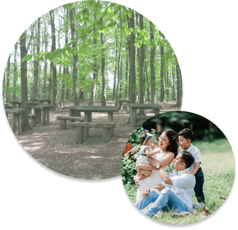
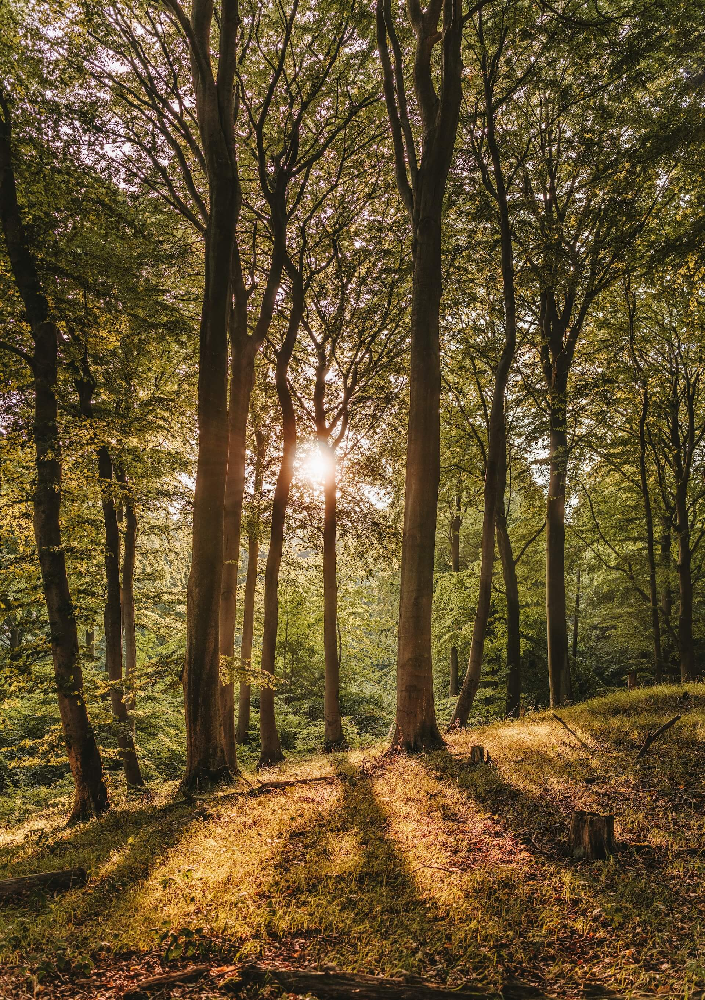

森林育的誕生
對於居住在城市中家庭的孩子來說，
要接觸大自然與身處其中是很困難的。
創辦人張巴特 與 執行長周水晶
在教育現場中看過許多孩子缺少能接觸大自然的機會，
同時因科技的方便，而失去探索、思考與創造。
為了打破被侷限的腦袋及冷漠的親子關係，
為了重拾人們對環境的重視與生態的愛護，
因此創設「森林育」
來幫助更多人深入了解自然的奧妙，同時維繫人與人之間的溫度。
「森林育」顧名思義是以自然為意象的森林，與教育做結合。

90年起於全國各校開辦自然教育相關講座。
92年開辦第一場親子教育結合國家森林園區之活動。
92年起陸續啟動結合多元教育活動，與政府合作，推廣於全國民眾。
94年起與各地大專院校合作，提供專業師資進入校園推廣。
95年置辦暑期夏令營，與民間企業聯手舉辦愛心推廣營隊。
110年起邀請美國、日本專業教授開辦教育講座。
至今己有超過五萬名學童及成人受惠。
92年開辦第一場親子教育結合國家森林園區之活動。
92年起陸續啟動結合多元教育活動，與政府合作，推廣於全國民眾。
94年起與各地大專院校合作，提供專業師資進入校園推廣。
95年置辦暑期夏令營，與民間企業聯手舉辦愛心推廣營隊。
110年起邀請美國、日本專業教授開辦教育講座。
至今己有超過五萬名學童及成人受惠。
90年起於全國各校開辦自然教育相關講座。
92年開辦第一場親子教育結合國家森林園區之活動。
92年起陸續啟動結合多元教育活動，與政府合作，推廣於全國民眾。
94年起與各地大專院校合作，提供專業師資進入校園推廣。
95年置辦暑期夏令營，與民間企業聯手舉辦愛心推廣營隊。
110年起邀請美國、日本專業教授開辦教育講座。
至今己有超過五萬名學童及成人受惠。
92年開辦第一場親子教育結合國家森林園區之活動。
92年起陸續啟動結合多元教育活動，與政府合作，推廣於全國民眾。
94年起與各地大專院校合作，提供專業師資進入校園推廣。
95年置辦暑期夏令營，與民間企業聯手舉辦愛心推廣營隊。
110年起邀請美國、日本專業教授開辦教育講座。
至今己有超過五萬名學童及成人受惠。
創辦人 張巴特
國立台北教育大學 教育學士
國立政治大學 心理學碩士
創辦人 周水晶
國立台灣大學 生物環境系統工程學士
國立台灣大學 生態學與演化生物學碩士